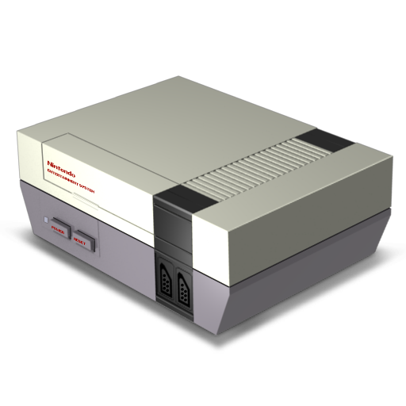

La NES, consola de 8 bits de Nintendo, ha sido uno de los mayores éxitos de la historia de los videojuegos. Basta decir que se vendieron más de 60 millones de consolas y 500 millones de juegos. Hay que remontarse al año 1983, cuando Nintendo introduce en el mercado japonés su Famicom (FAMily COMputer). Era la versión japonesa de la NES tal y como la conocemos hoy día. Los cartuchos se introducían por una ranura que se encontraba en su superficie y para extraerlos se usaba un botón de EJECT, como en su hermana mayor Super Nintendo. El sistema gozó de mucho éxito, entre otras cosas por sus magníficos juegos.